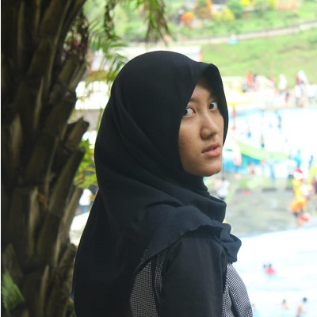
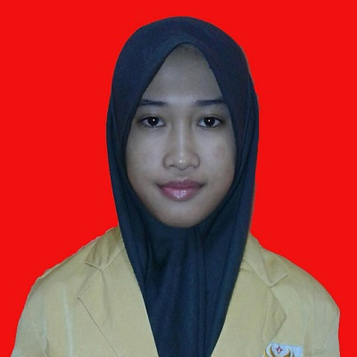
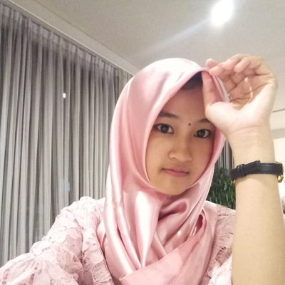

” Saya baru tahu kalau di dekat rumah saya ada tukang kayu yang handal banget. “
Di balik layar

Nurul Azizah
Chief Executif Officer
Hukum tidak akan pernah dapat dilaksanakan kecuali didukung oleh ketakutan.

Fatkhus Solikhatul M
Chief Financial Officier
Bila kebenaran telah ada, maka hanya dustalah yang perlu diciptakan.
Mulianda Lestari
Chief Technical Officier
Barang siapa mengabdi dengan tanah air maka ia tak membutuhkan nenek moyang.

Agustina Tri Lindasari
Chief Marketing Officier
Perdamaian tanpa keadilan adalah penjajahan.
Nurlintang Bening P
Chief Operating Officier
Pena akan jadi lebih tajam daripada pedang bila berada pada tangan manusia.

Rian Adi Saputro
Web Developer
Cendiaka akan percuma jika tak dibarengi akhlakul karimah.